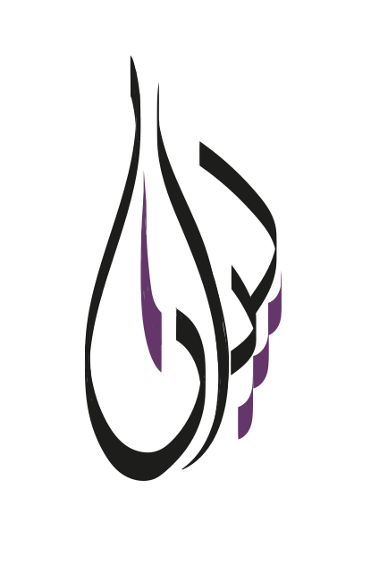

Our Founder: Bayan Amin Eddine
As the founder of E-Art, she brings a lifetime of passion and experience in the art world to the creation of E-Art, a
virtual gallery where emerging and established artists can showcase their work and art lovers can discover and rent
unique pieces from around the world. With over 8 years in the industry, she has always been captivated by the
transformative power of art and its ability to inspire, enrich, and bring people together. It is this belief that drives
her to build E-Art, a platform dedicated to fostering a love and appreciation for creativity and self-expression. She is
excited to bring her vision for E-Art to life and to build a community of artists and art enthusiasts who share her
passion. The future is bright for E-Art, and she can't wait to see what the journey ahead holds.
